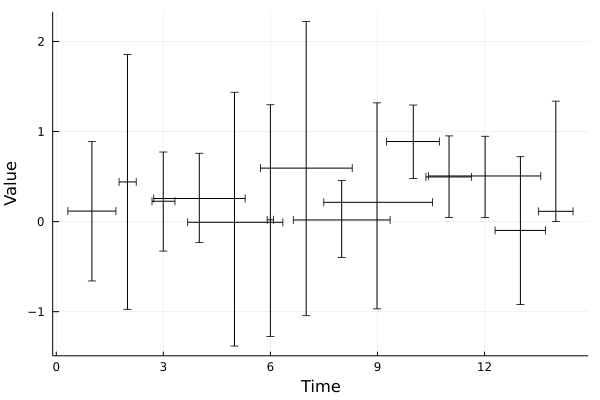

Uncertain datasets
UncertainValueDataset
UncertainData.UncertainDatasets.UncertainValueDataset — TypeUncertainValueDataset(values)A dataset of uncertain values which have no explicit index associated with its uncertain values. Use this type when you want to be explicit about the values representing data values, as opposed to UncertainIndexDatasets.
Fields
values::AbstractVector{<:AbstractUncertainValue}: The uncertain values. Each value is represented by anAbstractUncertainValue.
UncertainIndexDataset
UncertainData.UncertainDatasets.UncertainIndexDataset — TypeUncertainIndexDataset(indices)A dataset containing indices that have uncertainties associated with them.
UncertainIndexDatasets are meant to contain the indices corresponding to an UncertainValueDataset, and are used for the indices field in UncertainIndexValueDatasets.
Example
Say we had a dataset of 20 values for which the uncertainties are normally distributed with increasing standard deviation through time.
using UncertainData, Plots
time_inds = 1:13
uvals = [UncertainValue(Normal, ind, rand(Uniform()) + (ind / 6)) for ind in time_inds]
inds = UncertainIndexDataset(uvals)
# With built-in plot recipes, we can plot the dataset, say, using the
33rd to 67th percentile range for the indices.
plot(inds, [0.33, 0.67])UncertainValueDatasets can also be comprised of uncertain values of different types (see also UncertainValue).
o1 = UncertainValue(Normal, 0, 0.5)
o2 = UncertainValue(Normal, 2.0, 0.1)
o3 = UncertainValue(Uniform, 0, 4)
o4 = UncertainValue(Uniform, rand(100))
o5 = UncertainValue(Beta, 4, 5)
o6 = UncertainValue(Gamma, 4, 5)
o7 = UncertainValue(Frechet, 1, 2)
o8 = UncertainValue(BetaPrime, 1, 2)
o9 = UncertainValue(BetaBinomial, 10, 3, 2)
o10 = UncertainValue(Binomial, 10, 0.3)
uvals = [o1, o2, o3, o4, o5, o6, o7, o8, o9, o10]
d = UncertainValueDataset(uvals)
# Plot the 20th to 80th percentile range error bars.
plot(d, [0.2, 0.8])UncertainIndexValueDataset
UncertainData.UncertainDatasets.UncertainIndexValueDataset — TypeUncertainIndexValueDataset(indices, values)A generic dataset type consisting of a set of uncertain indices (e.g. time, depth, order, etc...) and a set of uncertain values.
The i-th index is assumed to correspond to the i-th value. For example, if data is an instance of a UncertainIndexValueDataset, then
data.indices[2]is the index for the valuedata.values[2]data.values[7]is the value for the indexdata.indices[7].data[3]is an index-value tuple(data.indices[3], data.values[3]).
Example
# Simulate some data values measured a specific times.
times = 1:100
values = sin.(0.0:0.1:100.0)
# Assume the data were measured by a device with normally distributed
# measurement uncertainties with fluctuating standard deviations
σ_range = (0.1, 0.7)
uncertain_values = [UncertainValue(Normal, val, rand(Uniform(σ_range...)))
for val in values]
# Assume the clock used to record the times is uncertain, but with uniformly
# distributed noise that doesn't change through time.
uncertain_times = [UncertainValue(Uniform, t-0.1, t+0.1) for t in times]
# Pair the time-value data. If vectors are provided to the constructor,
# the first will be interpreted as the indices and the second as the values.
data = UncertainIndexValueDataset(uncertain_times, uncertain_values)
# A safer option is to first convert to UncertainIndexDataset and
# UncertainValueDataset, so you don't accidentally mix the indices
# and the values.
uidxs = UncertainIndexDataset(uncertain_times)
uvals = UncertainValueDataset(uncertain_values)
data = UncertainIndexValueDataset(uidxs, uvals)Examples
Example 1: UncertainIndexValueDataset
UncertainIndexValueDatasets have uncertainties associated with both the indices (e.g. time, depth, etc) and the values of the data points.
Let's consider some measurements with associated uncertainties, which are of different types, because they are taken from different sources and/or were measured used different devices. The values were measures at some time indices by an inaccurate clock, so that the times of measuring are normally distributed values with fluctuating standard deviations. We'll represent all of these measurements in an UncertainIndexValueDataset.
Built-in plot recipes make it easy to visualize such datasets with error bars. By default, plotting the dataset plots the median value of the index and the measurement (only for scatter plots), along with the 33rd to 67th percentile range error bars in both directions. You can also tune the error bars explicitly, by specifying quantiles, like below:
using UncertainData, Plots
# These are our measurements
r1 = [UncertainValue(Normal, rand(), rand()) for i = 1:10]
r2 = UncertainValue(rand(10000))
r3 = UncertainValue(Uniform, rand(10000))
r4 = UncertainValue(Normal, -0.1, 0.5)
r5 = UncertainValue(Gamma, 0.4, 0.8)
vals = [r1; r2; r3; r4; r5]
# These are our time indices
inds = [UncertainValue(Normal, i, rand(Uniform(0, 1))) for i = 1:length(vals)]
# Combine
x = UncertainIndexValueDataset(inds, vals)
# Plot 90th percentile range both for indices and values.
plot(x, [0.05, 0.95], [0.05, 0.95], xlabel = "Time", ylabel = "Value")
Example 2: UncertainIndexValueDataset
Say we had a dataset of 20 values for which the uncertainties are normally distributed with increasing standard deviation through time. We also have some uncertain values that are associated with the indices.
using UncertainData, Plots
# Time indices
time_inds = 1:13
uvals = [UncertainValue(Normal, ind, rand(Uniform()) + (ind / 6)) for ind in time_inds]
inds = UncertainIndexDataset(uvals)
# Measurements
u1 = UncertainValue(Gamma, rand(Gamma(), 500))
u2 = UncertainValue(rand(MixtureModel([Normal(1, 0.3), Normal(0.1, 0.1)]), 500))
uvals3 = [UncertainValue(Normal, rand(), rand()) for i = 1:11]
measurements = UncertainValueDataset([u1; u2; uvals3])
# Combine
x = UncertainIndexValueDataset(inds, measurements)
# Plot the dataset with error bars in both directions, using the 20th to 80th percentile
# range for the indices and the 33rd to 67th percentile range for the data values.
plot(x, [0.2, 0.8], [0.33, 0.67], xlabel = "Time", ylabel = "Value")
savefig("uncertainindexvaluedataset_ex2.png") # hide